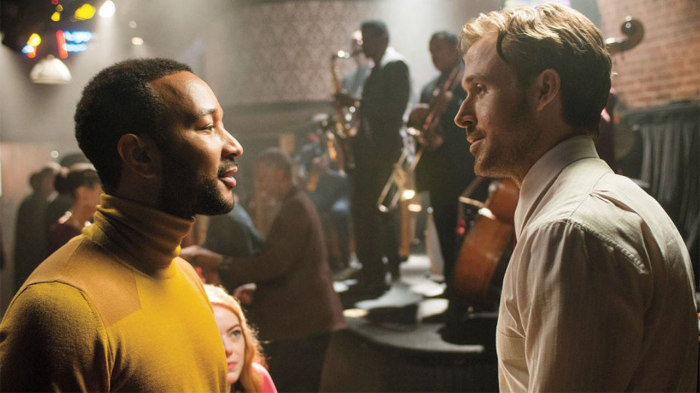
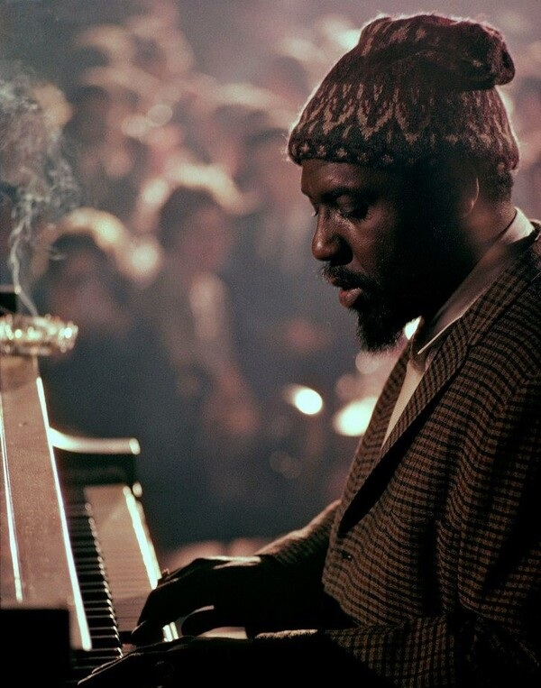
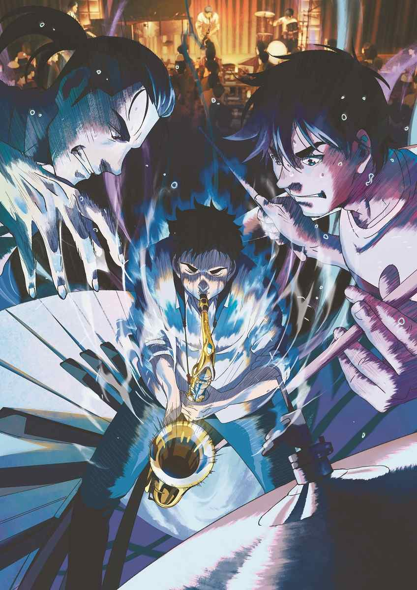

재즈의 대중화와 상업화
20세기 초중반, 재즈는 미국의 대중음악으로 자리잡으며 큰 인기를 끌었다. 라디오 방송과 음반 산업이 발달하면서 재즈는 점차 대중화되기
시작했다. 1920~30년대에는 스윙 재즈가 유행했고, 벤니 굿맨, 카운트 베이시 같은 빅밴드들이 전성기를 맞이했다. 이들은 댄스홀과 라디오
방송을 통해 많은 사람들의 사랑을 받았다.
1940년대부터는 재즈의 상업화 경향이 더욱 뚜렷해졌다. 딕시랜드 재즈, 스윗 재즈처럼 대중의 취향을 반영한 상업적인 스타일이 인기를 끌었고, 백인 뮤지션 중심의 ‘화이트 재즈’도 하나의 유행이 되었다. 반면, 비밥이나 쿨 재즈처럼 예술성과 창의성을 추구하는 흐름도 공존했다.
1970~80년대 이후에는 퓨전 재즈, 스무스 재즈처럼 상업성을 강조한 장르들이 주류로 자리잡았다. 대중적인 멜로디와 리듬을 활용한 이지리스닝 스타일이 각광받았고, 어쿠스틱 재즈나 모던 크리에이티브 재즈는 소수의 마니아층을 중심으로 이어졌다.
이처럼 재즈는 대중화와 상업화의 흐름을 타며 대중음악으로서의 입지를 넓혀왔다. 하지만 이런 변화 속에서 재즈 고유의 예술성과 창의성이 훼손된다는 비판도 있었다. 시장 논리에 따라가다 보니 재즈만의 개성과 깊이를 잃어버릴 수 있다는 우려도 있었던 거다.
결국 재즈는 대중성과 예술성 사이에서 늘 긴장을 유지해 왔다고 볼 수 있다. 상업화는 피할 수 없는 흐름이었지만, 그 속에서도 재즈의 본질을 지키려는 뮤지션들이 있었기에 지금의 재즈가 존재하게 된 거다. 앞으로도 재즈는 시대의 흐름을 받아들이면서, 대중성과 예술성 사이의 균형을 찾아갈 것이다.


1940년대부터는 재즈의 상업화 경향이 더욱 뚜렷해졌다. 딕시랜드 재즈, 스윗 재즈처럼 대중의 취향을 반영한 상업적인 스타일이 인기를 끌었고, 백인 뮤지션 중심의 ‘화이트 재즈’도 하나의 유행이 되었다. 반면, 비밥이나 쿨 재즈처럼 예술성과 창의성을 추구하는 흐름도 공존했다.
1970~80년대 이후에는 퓨전 재즈, 스무스 재즈처럼 상업성을 강조한 장르들이 주류로 자리잡았다. 대중적인 멜로디와 리듬을 활용한 이지리스닝 스타일이 각광받았고, 어쿠스틱 재즈나 모던 크리에이티브 재즈는 소수의 마니아층을 중심으로 이어졌다.
이처럼 재즈는 대중화와 상업화의 흐름을 타며 대중음악으로서의 입지를 넓혀왔다. 하지만 이런 변화 속에서 재즈 고유의 예술성과 창의성이 훼손된다는 비판도 있었다. 시장 논리에 따라가다 보니 재즈만의 개성과 깊이를 잃어버릴 수 있다는 우려도 있었던 거다.
결국 재즈는 대중성과 예술성 사이에서 늘 긴장을 유지해 왔다고 볼 수 있다. 상업화는 피할 수 없는 흐름이었지만, 그 속에서도 재즈의 본질을 지키려는 뮤지션들이 있었기에 지금의 재즈가 존재하게 된 거다. 앞으로도 재즈는 시대의 흐름을 받아들이면서, 대중성과 예술성 사이의 균형을 찾아갈 것이다.
미디어와 결합된 재즈
한때 재즈는 거리의 음악이었고, 클럽과 공연장을 중심으로 생명력을 얻었다. 그러나 오늘날의 재즈는 더 이상 무대 위에만 머물지 않는다.
영화, 애니메이션, 드라마, 게임 등 다양한 미디어와 결합하면서 새로운 세대와 만나는 방식으로 확장되고 있다.
애니메이션 영화 블루 자이언트는 열정적인 색소폰 연주자 다이와 그의 밴드가 성장해가는 이야기를 중심으로, 재즈의 뜨거운 에너지와 진심을 생생하게 전달한다. 실제 재즈 연주자들의 연주가 그대로 삽입되어, 음악이 단순한 배경이 아닌 감정의 중심으로 기능한다. 언덕길의 아폴론 역시 1960년대 일본을 배경으로, 재즈를 통해 친구들이 교감하고 성장하는 이야기를 섬세하게 풀어낸다. 이 두 작품은 재즈가 단순한 장르가 아니라 사람과 사람을 연결하는 ‘언어’가 될 수 있다는 가능성을 보여준다.
픽사 애니메이션 *소울(Soul)*은 삶의 의미와 열정을 재즈를 매개로 풀어낸 작품이다. 주인공 조는 재즈 피아니스트로서의 꿈과 삶의 진짜 목적 사이에서 고민하며, 음악을 통해 자아를 찾아가는 여정을 그린다. 이 작품은 재즈가 개인의 내면을 탐구하는 철학적 메시지를 담아낼 수 있는 힘이 있다는 걸 증명한다.
드라마에서도 재즈는 주요한 역할을 한다. HBO의 *트레메(Treme)*는 허리케인 카트리나 이후의 뉴올리언스를 배경으로, 재즈와 도시의 회복을 연결지어 보여준다. 음악이 단지 배경이 아니라 지역 문화의 핵심으로 작동하면서, 재즈가 공동체의 정체성을 유지하고 회복하는 데 어떤 역할을 하는지를 그려낸다.
게임 속에서도 재즈는 강한 인상을 남긴다. L.A. 느와르는 1940~50년대 로스앤젤레스를 배경으로, 재즈와 느와르 영화 스타일을 결합해 독특한 분위기를 만들어낸다. 재즈 음악은 게임 내내 흐르며 시대적 정서와 분위기를 섬세하게 형성한다. 바이오쇼크 인피니트에서도 레트로 스타일로 편곡된 재즈와 팝 음악이 혼재하면서 디스토피아 세계에 묘한 현실감을 부여한다.
또한 넷플릭스 다큐멘터리 *퀸시(Quincy)*는 재즈 거장 퀸시 존스의 삶을 조명하며, 재즈가 어떻게 팝, 영화음악, 사회운동과 연결되는지를 보여준다. 그는 마이클 잭슨의 프로듀서이자, 스티븐 스필버그 영화의 음악감독이기도 했던 인물로, 재즈가 장르를 넘어 문화 전반에 영향을 미쳤다는 사실을 생생하게 전한다.
이처럼 재즈는 단지 ‘옛 음악’이나 ‘전문가의 음악’으로만 머물지 않는다. 오늘날 재즈는 미디어를 통해 이야기, 정서, 세계관의 일부로 기능하며, 새로운 맥락에서 다시 태어나고 있다. 미디어 속 재즈는 그 자체로 감정을 전달하고, 인물과 세계를 입체적으로 만들어주는 역할을 한다.
결국 재즈는 변화를 받아들이며 스스로를 끊임없이 새롭게 정의해왔다. 과거와 현재를 잇고, 대중성과 예술성을 넘나들며, 다양한 미디어 안에서 여전히 살아 숨 쉬는 장르. 오늘날의 재즈는 더 이상 특정 공간에 갇힌 음악이 아니라, 시각과 청각, 감정과 이야기가 어우러지는 새로운 무대 위에서 계속 연주되고 있다.

애니메이션 영화 블루 자이언트는 열정적인 색소폰 연주자 다이와 그의 밴드가 성장해가는 이야기를 중심으로, 재즈의 뜨거운 에너지와 진심을 생생하게 전달한다. 실제 재즈 연주자들의 연주가 그대로 삽입되어, 음악이 단순한 배경이 아닌 감정의 중심으로 기능한다. 언덕길의 아폴론 역시 1960년대 일본을 배경으로, 재즈를 통해 친구들이 교감하고 성장하는 이야기를 섬세하게 풀어낸다. 이 두 작품은 재즈가 단순한 장르가 아니라 사람과 사람을 연결하는 ‘언어’가 될 수 있다는 가능성을 보여준다.
픽사 애니메이션 *소울(Soul)*은 삶의 의미와 열정을 재즈를 매개로 풀어낸 작품이다. 주인공 조는 재즈 피아니스트로서의 꿈과 삶의 진짜 목적 사이에서 고민하며, 음악을 통해 자아를 찾아가는 여정을 그린다. 이 작품은 재즈가 개인의 내면을 탐구하는 철학적 메시지를 담아낼 수 있는 힘이 있다는 걸 증명한다.
드라마에서도 재즈는 주요한 역할을 한다. HBO의 *트레메(Treme)*는 허리케인 카트리나 이후의 뉴올리언스를 배경으로, 재즈와 도시의 회복을 연결지어 보여준다. 음악이 단지 배경이 아니라 지역 문화의 핵심으로 작동하면서, 재즈가 공동체의 정체성을 유지하고 회복하는 데 어떤 역할을 하는지를 그려낸다.
게임 속에서도 재즈는 강한 인상을 남긴다. L.A. 느와르는 1940~50년대 로스앤젤레스를 배경으로, 재즈와 느와르 영화 스타일을 결합해 독특한 분위기를 만들어낸다. 재즈 음악은 게임 내내 흐르며 시대적 정서와 분위기를 섬세하게 형성한다. 바이오쇼크 인피니트에서도 레트로 스타일로 편곡된 재즈와 팝 음악이 혼재하면서 디스토피아 세계에 묘한 현실감을 부여한다.
또한 넷플릭스 다큐멘터리 *퀸시(Quincy)*는 재즈 거장 퀸시 존스의 삶을 조명하며, 재즈가 어떻게 팝, 영화음악, 사회운동과 연결되는지를 보여준다. 그는 마이클 잭슨의 프로듀서이자, 스티븐 스필버그 영화의 음악감독이기도 했던 인물로, 재즈가 장르를 넘어 문화 전반에 영향을 미쳤다는 사실을 생생하게 전한다.
이처럼 재즈는 단지 ‘옛 음악’이나 ‘전문가의 음악’으로만 머물지 않는다. 오늘날 재즈는 미디어를 통해 이야기, 정서, 세계관의 일부로 기능하며, 새로운 맥락에서 다시 태어나고 있다. 미디어 속 재즈는 그 자체로 감정을 전달하고, 인물과 세계를 입체적으로 만들어주는 역할을 한다.
결국 재즈는 변화를 받아들이며 스스로를 끊임없이 새롭게 정의해왔다. 과거와 현재를 잇고, 대중성과 예술성을 넘나들며, 다양한 미디어 안에서 여전히 살아 숨 쉬는 장르. 오늘날의 재즈는 더 이상 특정 공간에 갇힌 음악이 아니라, 시각과 청각, 감정과 이야기가 어우러지는 새로운 무대 위에서 계속 연주되고 있다.